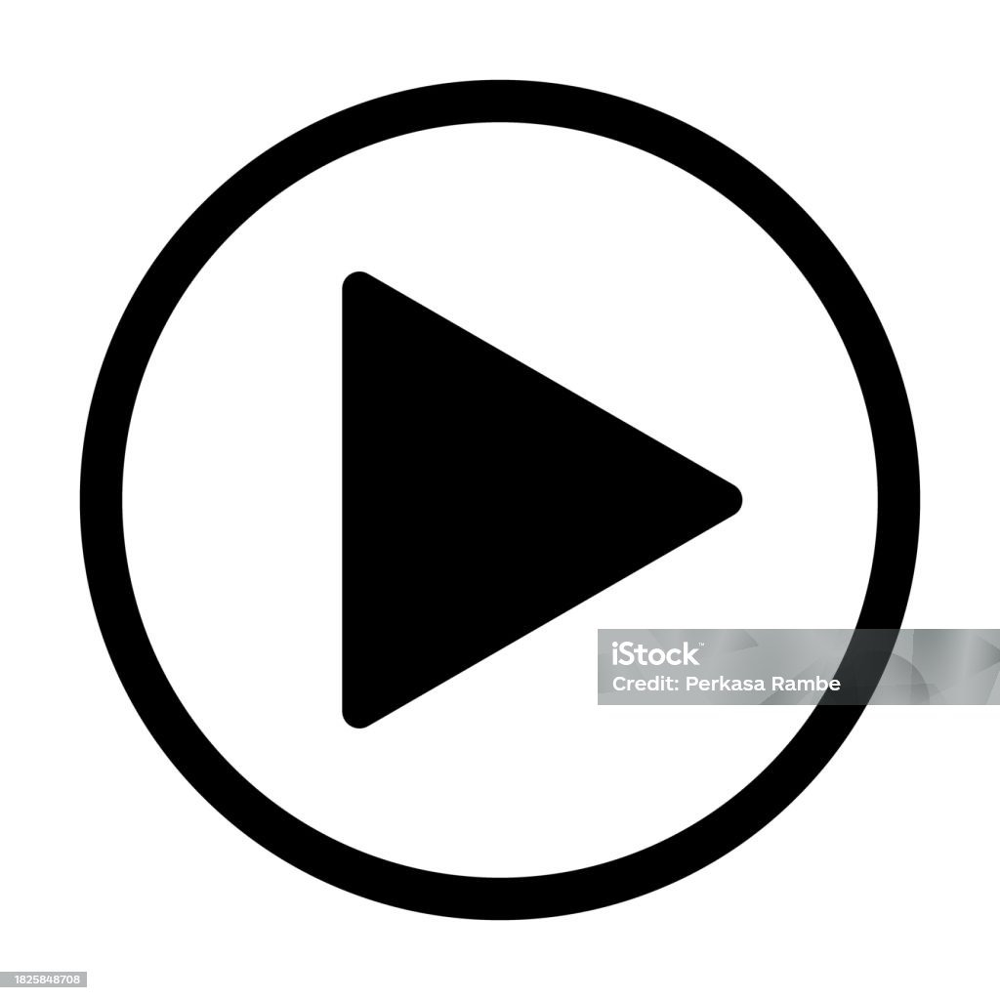
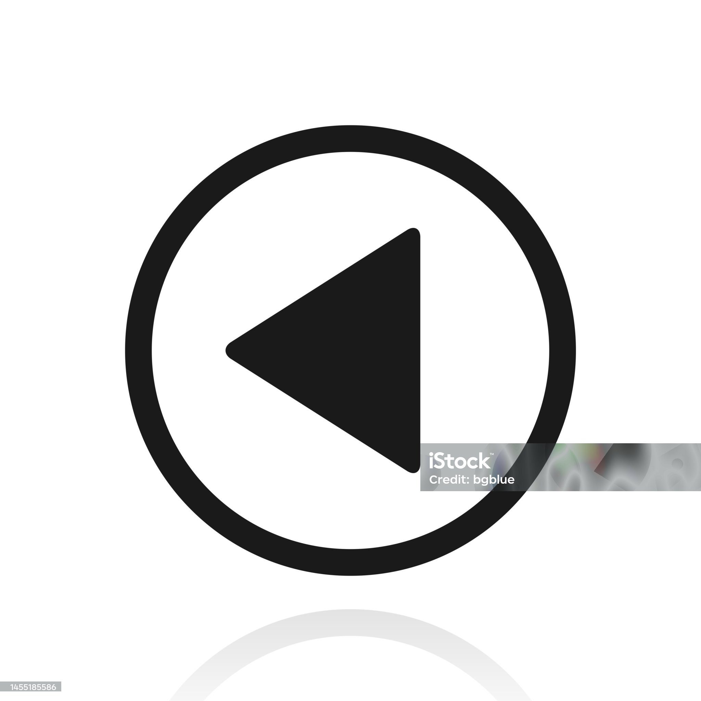

<style>
    * {
        margin: 0;
        padding: 0;
}

    nav {
        height: 100vh;
        display: flex;
        justify-content: center;
        align-items: center;
    }

    div {
        height: 400px;
        width: 400px;
        background-color: hotpink;
        position: relative;
    }
    p{
        color: aliceblue;
        font-size:xx-large;
        font-weight: 26px;
        position:absolute;
        left: 50%;
        top:45%
    }
    img{
        height: 50px;
        width: 50px;
    }
    .playone{
        position: absolute;
        left: 94%;
        top: 42%;
    }
    .pause{
        position: absolute;
        right: 94%;
        top: 42%;
    } 
    .one{
        position: absolute;
        bottom: 0%;
        left: 45%;
    }
    .two{
        position: absolute;
        bottom: 0%;
        left: 41%;
    }
    
    

</style>
</style>
<nav>
    <div>
        <p>1</p>
        
        
        
        
        
    </div>
</nav>
